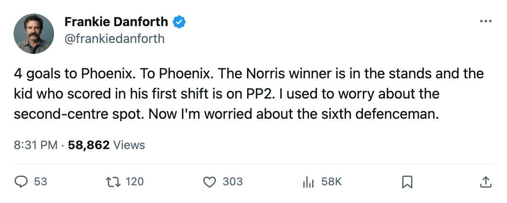
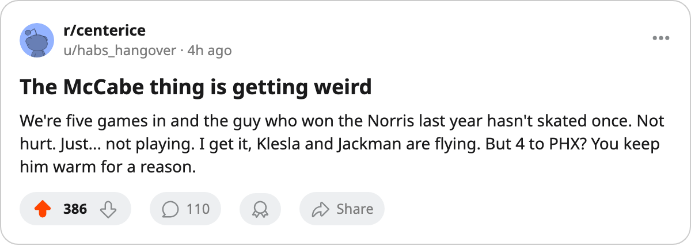

TOR
TORDANFORTH: Code Yellow, 9 in the last 3, and the Norris winner still watching
The defence that conceded 1 in 2 is letting in 3 a night. McCabe has not played.
 Frankie DanforthColumnist · Queen City Telegram
Frankie DanforthColumnist · Queen City Telegram
Code Yellow

I owe you a follow-up. Three games ago I wrote that the six defencemen ahead of  Bryan McCabe84 had conceded 1 goal in 2 nights and I called it the best defence I'd seen in a Maple Leafs sweater since the cup was lifted in June. That was fair then. It is not fair now.
Bryan McCabe84 had conceded 1 goal in 2 nights and I called it the best defence I'd seen in a Maple Leafs sweater since the cup was lifted in June. That was fair then. It is not fair now.
Since that note the group has allowed 3 to  Pittsburgh Penguins, 2 to
Pittsburgh Penguins, 2 to  New York Rangers, and 4 to
New York Rangers, and 4 to  Phoenix Coyotes. The Coyotes are 0-5-0. They have scored 9 goals all season. We gave them 4 in one period and a half and called it a win.
Phoenix Coyotes. The Coyotes are 0-5-0. They have scored 9 goals all season. We gave them 4 in one period and a half and called it a win.
The record still says Toronto leads the Northeast at 8 points, 2 games ahead of  Buffalo Sabres. It also says 10 goals allowed in 5 games, and all but 1 of those came after Tuesday. The two shutout-adjacent nights are gone. What is left is a unit that is 9th in the league in goals against per game and I say that as a Leafs writer who cannot remember a 2.00 pace feeling like safety.
Buffalo Sabres. It also says 10 goals allowed in 5 games, and all but 1 of those came after Tuesday. The two shutout-adjacent nights are gone. What is left is a unit that is 9th in the league in goals against per game and I say that as a Leafs writer who cannot remember a 2.00 pace feeling like safety.
The question I keep asking
McCabe. 84 overall. Last season's Norris Trophy winner. $3.00M, 3 years left. He has not skated in a game this season, and he has not been injured. The sheet says he is a healthy scratch, which means someone in that room looked at the Norris winner and decided he was the 7th defenceman.
Maybe that was right in October, when the first two nights looked like a wall. Maybe it was right because  Rostislav Klesla87 at 23 and
Rostislav Klesla87 at 23 and  Barret Jackman86 at 24 are young enough to eat 27 and 28 minutes a night and ask for more. I don't know. What I know is the goals started coming and the guy who won the trophy for stopping them is in the press box.
Barret Jackman86 at 24 are young enough to eat 27 and 28 minutes a night and ask for more. I don't know. What I know is the goals started coming and the guy who won the trophy for stopping them is in the press box.
We are 5 games into a season against a schedule that now asks us to visit Montreal on Thursday, play Boston on Saturday, and host five clubs in ten days. The legs are not gone yet, but they will be, and the Norris winner is here.
The code
I am moving the Panic Meter to Yellow. Not Orange. We are 4-1-0, up 2 points in the division, scoring more than 4 a night. But a Leafs lifer does not watch a 0-5 team pour 4 past the Conn Smythe winner and call it Code Green.
Montreal on Thursday. 1-1-1, 3 points, first meeting of the season. If we hold them to 2 and win it, I go back to Green on Friday. If we let them score 4 the way Phoenix did, come back here and tell me the second-centre question is the only thing wrong with this team.

